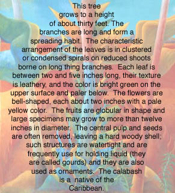

|
Calabash: A Journal of Caribbean Arts and
Letters is an international literary journal dedicated to
publishing works encompassing, but not limited to, the Anglophone,
Francophone, Hispanophone and Dutch-speaking Caribbean. The Journal
is especially dedicated to presenting the arts and letters of those
communities that have long been under-represented within the creative
discourse of the region, among them: Aruba and the Netherlands Antilles,
Maroon societies, and the Asian and Amerindian societies of the
region. Calabash has a strong visual arts component.
Calabash: A
Journal of Caribbean Arts and Letters
Graduate Program in Spanish & Portuguese Languages & Literatures
New York University
19 University Place
New York, N.Y. 10003
U.S.A
E-mail: Calabash_journal@hotmail.com

Poem by Jacqueline Bishop
Image © Tony Monsanto
|
Founding Editor |
Jacqueline Bishop |
Editor |
Gerard Aching |
Associate Editors |
Kamla Best
Michela A. Calderaro
Sylvie Kandé
Hilda van Neck-Yoder
Edward J. Sullivan |
| Advisory Board |
Kamau Brathwaite
Maryse Conde
Edwidge Danticat
Galway Kinnell
Suzy Del Valle
Manthia Diawara
E.L. Doctorow
Charlotte Elias
Hamilton Fish
Lorna Goodison
Wilson Harris
Anna Ruth Henriques
George Lamming
Paule Marshall
Fred Papert
Veerle Poupeye
Jennifer Smit
Catharine Stimpson
Constance Sutton
Marianne de Tolentino
Silvio Torres-Saillant
|
|
|